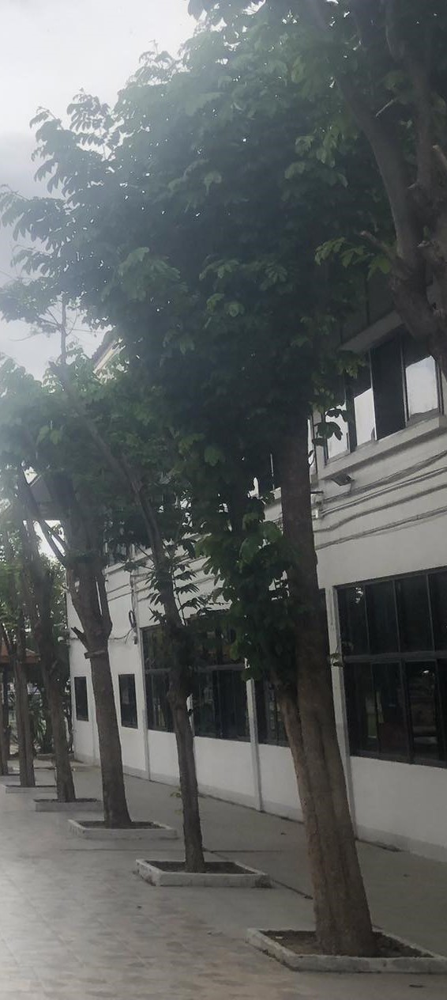
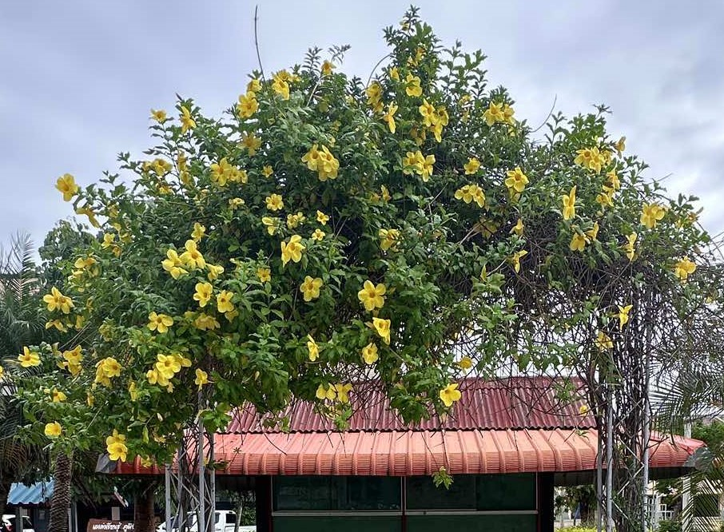
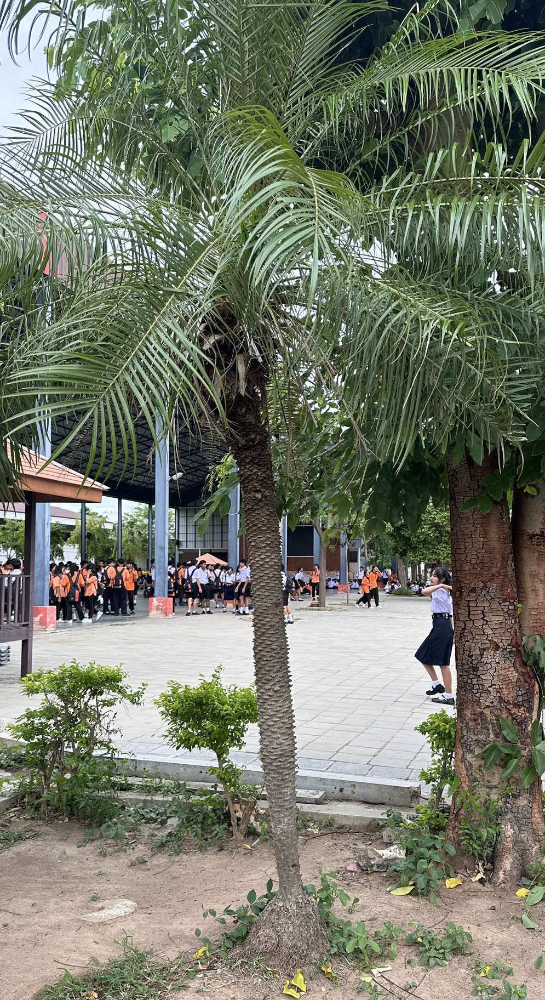
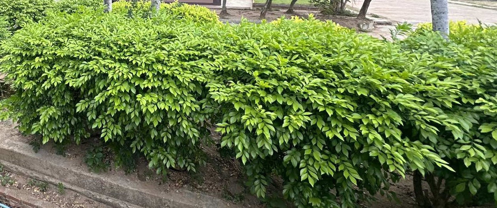

ประดู่กิ่งอ่อน
ต้นประดู่กิ่งอ่อน หรือที่รู้จักกันในชื่อ ประดู่บ้าน นั้นเป็นไม้ยืนต้นขนาดใหญ่ที่มีคุณค่าทั้งในด้านไม้ใช้สอยและสรรพคุณทางยา นอกจากนี้ยังเป็นไม้ประดับที่มีดอกสวยงามและส่งกลิ่นหอมอีกด้วย มาดูกันว่าต้นประดู่กิ่งอ่อนมีประโยชน์อะไรบ้าง
ประโยชน์ทางด้านไม้สอย
ไม้เนื้อแข็ง: ไม้ประดู่กิ่งอ่อนมีเนื้อไม้แข็ง แข็งแรง ทนทานต่อสภาพอากาศและแมลง เหมาะสำหรับใช้ในการก่อสร้างบ้านเรือน ทำเฟอร์นิเจอร์ เครื่องมือทางการเกษตร และงานแกะสลัก
ไม้มีค่า: เนื่องจากคุณสมบัติของไม้ที่เหนียว ทนทาน ทำให้ไม้ประดู่กิ่งอ่อนมีราคาค่อนข้างสูงและเป็นที่ต้องการของตลาด
ประโยชน์ทางด้านสมุนไพร
เปลือกต้น: ใช้รักษาแผลสด แก้บาดแผล
ใบ: ใช้แก้ไข้ แก้ท้องเสีย
ราก: ใช้ขับลม บำรุงโลหิต

เหลืองชัชวาลย์
ต้นเหลืองชัชวาล เป็นไม้เลื้อยที่มีดอกสีเหลืองอร่ามสวยงาม นอกจากจะใช้ประดับตกแต่งแล้ว ยังมีประโยชน์อื่นๆ อีกมากมาย
ประโยชน์ในการจัดสวน
ไม้เลื้อยคลุมกำแพง: เหลืองชัชวาลเป็นไม้เลื้อยที่เติบโตเร็ว สามารถใช้คลุมกำแพง รั้ว หรือซุ้มได้อย่างรวดเร็ว ทำให้บ้านดูสดใสและร่มรื่น
บังแดด: ใบของเหลืองชัชวาลหนาแน่น สามารถช่วยบังแดดและลดความร้อนได้เป็นอย่างดี
เพิ่มความสวยงาม: ดอกสีเหลืองอร่ามของเหลืองชัชวาลจะช่วยเพิ่มสีสันและความสวยงามให้กับสวนของคุณ
ประโยชน์อื่นๆ
ดูดซับมลพิษ: ช่วยดูดซับสารมลพิษในอากาศ ทำให้คุณภาพอากาศบริสุทธิ์ขึ้น
ป็นที่อยู่อาศัยของสัตว์เล็กๆ: ดอกและใบของเหลืองชัชวาลสามารถเป็นแหล่งอาหารและที่อยู่อาศัยของแมลงและสัตว์ขนาดเล็กชนิดอื่นๆ

ปาล์มสิบสองปันนา
ต้นปาล์มสิบสองปันนา เป็นพืชชนิดหนึ่งที่มีความสวยงามและมีประโยชน์หลายอย่าง ทั้งในด้านการประดับและการดูแลสุขภาพ โดยมีลักษณะเด่นคือลำต้นเดี่ยวเรียวเล็ก ใบเรียวยาวคล้ายขนนก แผ่กิ่งก้านสวยงาม เหมาะสำหรับการปลูกเป็นไม้ประดับ
ประโยชน์ที่สำคัญของต้นปาล์มสิบสองปันนา
ไม้ประดับ:
ความสวยงาม: รูปทรงของต้นปาล์มสิบสองปันนานั้นสง่างาม ใบเรียงตัวเป็นระเบียบ ทำให้เป็นจุดเด่นในสวนหรือมุมต่างๆ ของบ้าน
ขนาด: มีขนาดที่ไม่ใหญ่มาก เหมาะสำหรับปลูกในพื้นที่จำกัด หรือปลูกในกระถางเพื่อตกแต่งภายในอาคาร
ความหลากหลาย: สามารถนำไปปลูกเดี่ยว เป็นกลุ่ม หรือจัดสวนแนวตั้งได้
ปรับปรุงคุณภาพอากาศ:
ดูดซับสารพิษ: ปาล์มสิบสองปันนามีความสามารถในการดูดซับสารพิษในอากาศ เช่น ซายรีน (xylene) ซึ่งเป็นสารเคมีที่พบได้ในสีทาบ้าน ทำให้ช่วยลดมลพิษในอากาศภายในอาคาร
เพิ่มความชื้น: ช่วยเพิ่มความชื้นในอากาศ ทำให้รู้สึกสดชื่นและผ่อนคลาย
หมากเหลือง
ต้นหมากเหลือง นอกจากจะเป็นไม้ประดับที่มีใบสีเหลืองทองอร่ามสวยงามแล้ว ยังมีประโยชน์อื่นๆ อีกมากมาย
ประโยชน์ของต้นหมากเหลือง
ไม้มงคล: เชื่อกันว่าเป็นไม้มงคลที่นำความเจริญรุ่งเรืองมาสู่บ้านเรือน
ไม้ประดับ: ใช้ตกแต่งสวน หรือปลูกในกระถางเพื่อประดับภายในบ้าน
ฟอกอากาศ: ช่วยดูดซับสารพิษในอากาศ ทำให้อากาศบริสุทธิ์
บังแดด: ให้ร่มเงาและความร่มรื่น
ลดมลภาวะทางเสียง: ช่วยลดเสียงรบกวนจากภายนอก

โมกซ้อน
ต้นโมกซ้อน นอกจากจะมีดอกที่สวยงามและส่งกลิ่นหอมแล้ว ยังมีประโยชน์ทางสมุนไพรอีกด้วยค่ะ โดยส่วนต่าง ๆ ของต้นโมกซ้อนสามารถนำมาใช้ประโยชน์ได้ดังนี้
ประโยชน์ของต้นโมกซ้อน
ราก: ใช้รักษาโรคเรื้อน
ยาง: ใช้แก้โรคบิดที่มีอาการเลือดออก ใช้แก้พิษงูและแมลงกัดต่อย
เป็นไม้ดอกไม้หอม: ดอกของโมกซ้อนมีกลิ่นหอมเย็น ช่วยให้รู้สึกผ่อนคลาย
เป็นไม้ประดับ: มีรูปทรงสวยงาม ใบเขียว ดอกขาว ช่วยเพิ่มความสวยงามให้สวน
มีความเชื่อ: มีความเชื่อว่า "โมก" จะทำให้เกิดความสุข บริสุทธิ์ สดใส และคุ้มกันภัยกับชาวราศีพฤษภ
ต้นโพธิ์
ต้นโพธิ์ นอกจากจะเป็นต้นไม้ที่มีความสำคัญทางศาสนาและวัฒนธรรมแล้ว ยังมีประโยชน์อีกมากมายที่เราอาจคาดไม่ถึง
ประโยชน์ทางด้านสมุนไพร
ใบ: ใช้รับประทานเป็นยาแก้ไข้ ช่วยการขับถ่าย และมีฤทธิ์ทางเภสัชวิทยา ช่วยลดระดับน้ำตาลใน
ผล: รับประทานแก้กระหายน้ำ ช่วยรักษาอาการหืด ช่วยขับพิษ เป็นยาระบายอ่อนๆ และช่วยในการย่อยอาหาร
เมล็ด: รับประทานเป็นยาลดไข้ และมีฤทธิ์เป็นยาระบายอ่อนๆ
เปลือกต้น: นำมาต้มดื่ม แก้เจ็บคอ รักษาอาการปวดฟัน ลดอาการระบม ปวดกล้ามเนื้อ เป็นยารักษาโรคผิวหนัง
ยาง: ใช้ภายนอก สามารถนำมารักษาโรคหูด ริดสีดวงทวาร